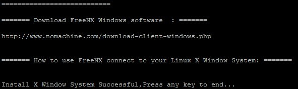
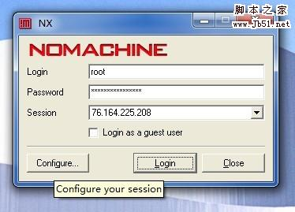
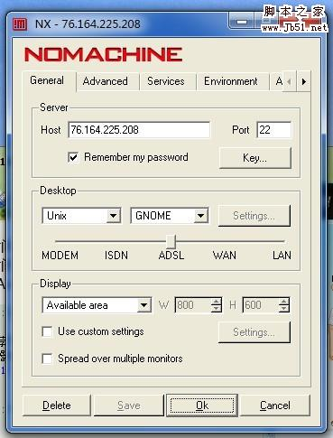
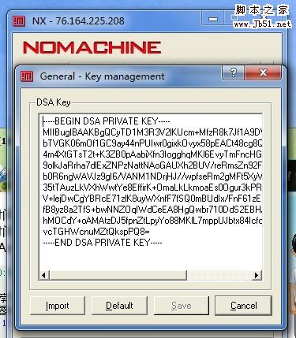
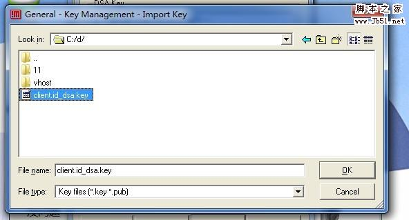
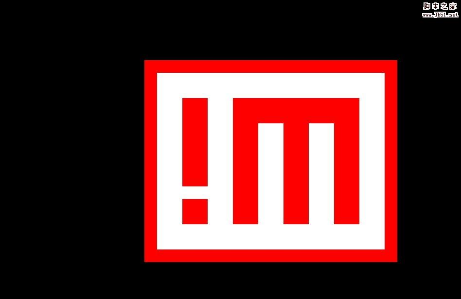
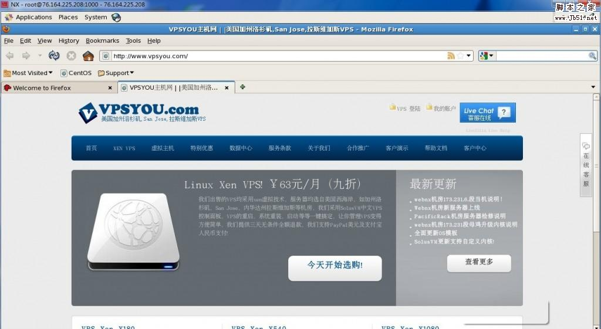

点评：VPSYOU今天提供了一个Centos安装桌面一键包，很方便。deepvps已经测试成功了，有兴趣的VPSer可以自己试试。
下面是转载VPSYOU官方网站上的文章内容：
之前也发布过关于在centos安装桌面的教程，那个太过于繁琐，今天发布一个Centos下安装X Window+GNOME Desktop的一键包，希望能方便那些需要在centos下安装图形界面的客户！
特别说明：本站只提供安装的一键包，不再提供任何与之相关的技术支持；本站不承担安装此一键包后出现影响生产环境之类等一切严重后台，故建议客户是在一个干净的centos系统里安装，另建议内存在768以上的客户安装及建议安装在32位的centos系统上！
本安装包本站已在centos5.5 32bit上安装成功，软装不成功可能与你之前安装的有软件上冲突之类的，请重装系统重试！
安装过程：
wget http://www.vpsyou.com/sh/xwindow.sh;sh ./xwindow.sh;
将上面1行复制，粘贴到您的linux ssh控制台里，回车，全自动安装，等待5-30分钟即可完成！
出现如下图时，按回车就行，表明你已经安装成功

如何登陆：
1.用winscp登陆你的vps，下载/backup/www.vpsyou.com/client.id_dsa.key到本地
2..下载FreeNX Windows 客户端并安装，下载地址：
http://www.nomachine.com/download-client-windows.php
3..安装FreeNX后打开，输入root，密码及vps的IP，并导入刚才下载回来的client.id_dsa.key，具体请看图：





